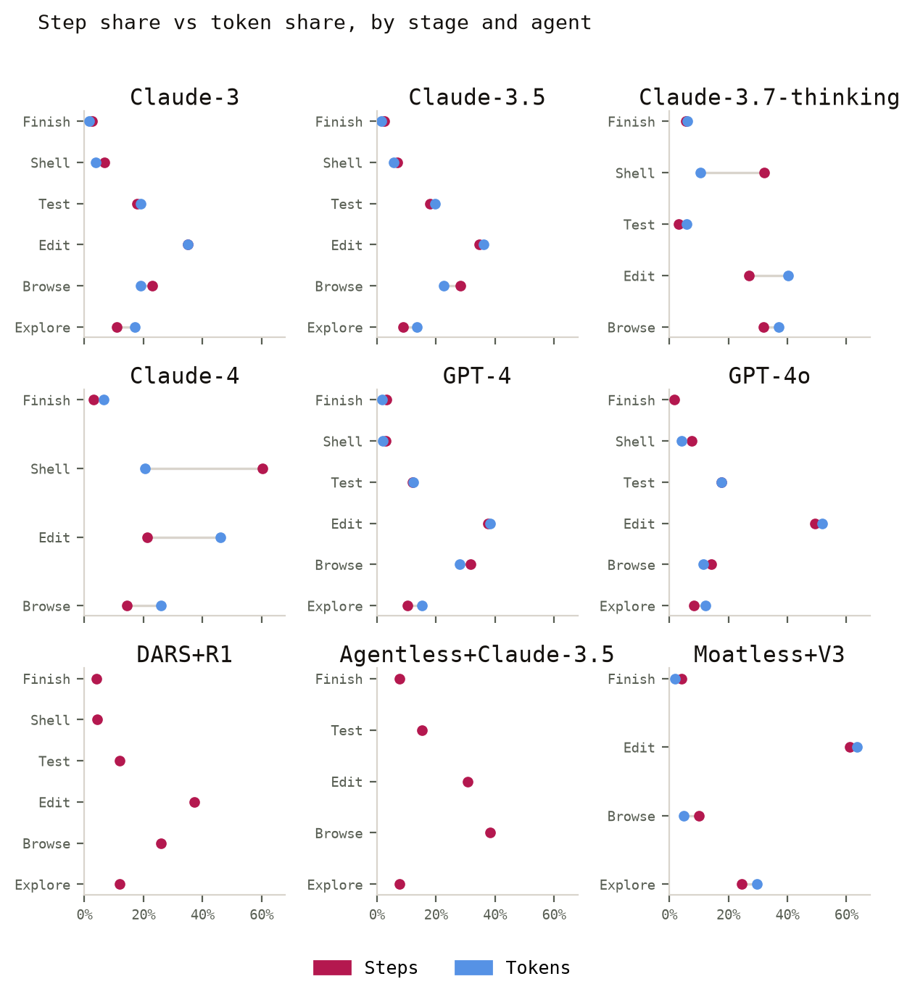
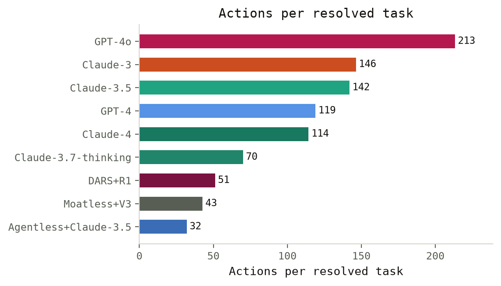
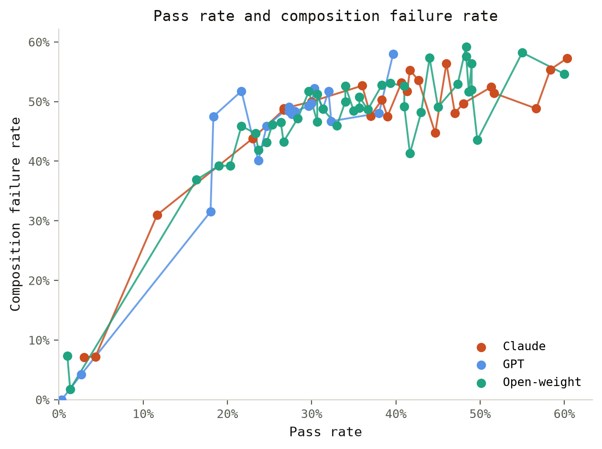
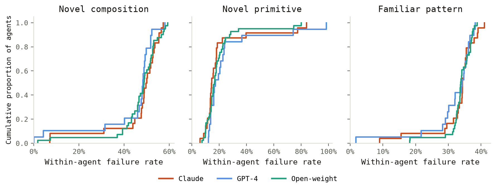
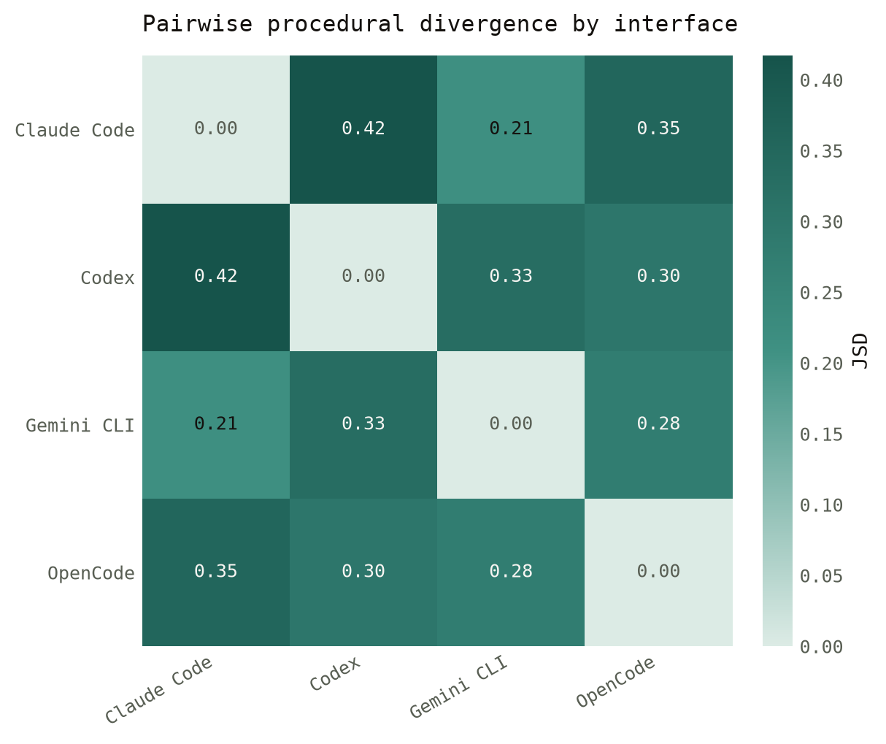
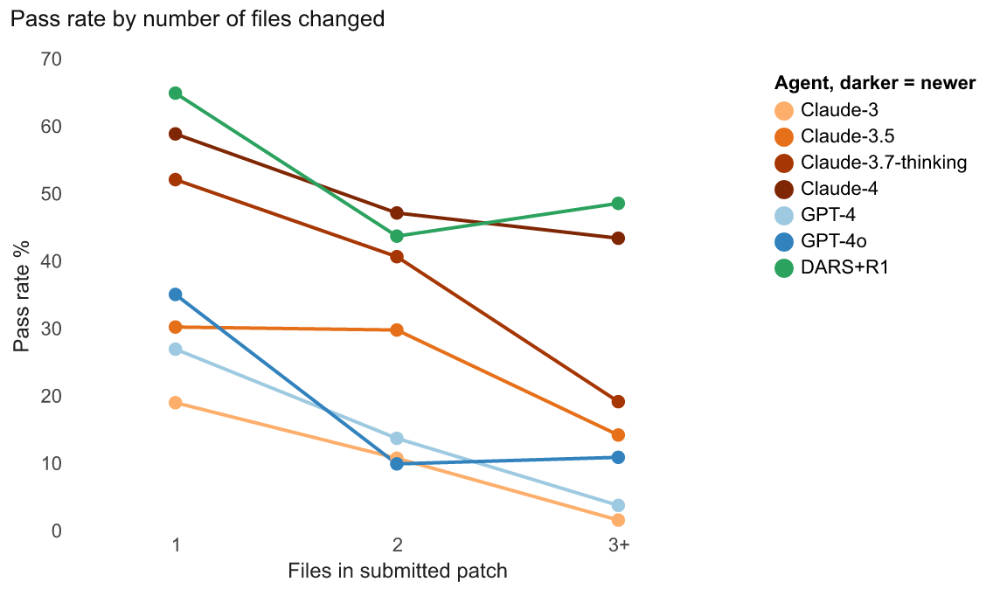
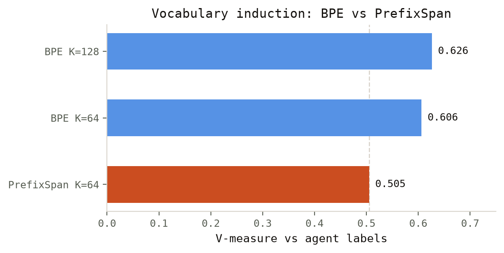
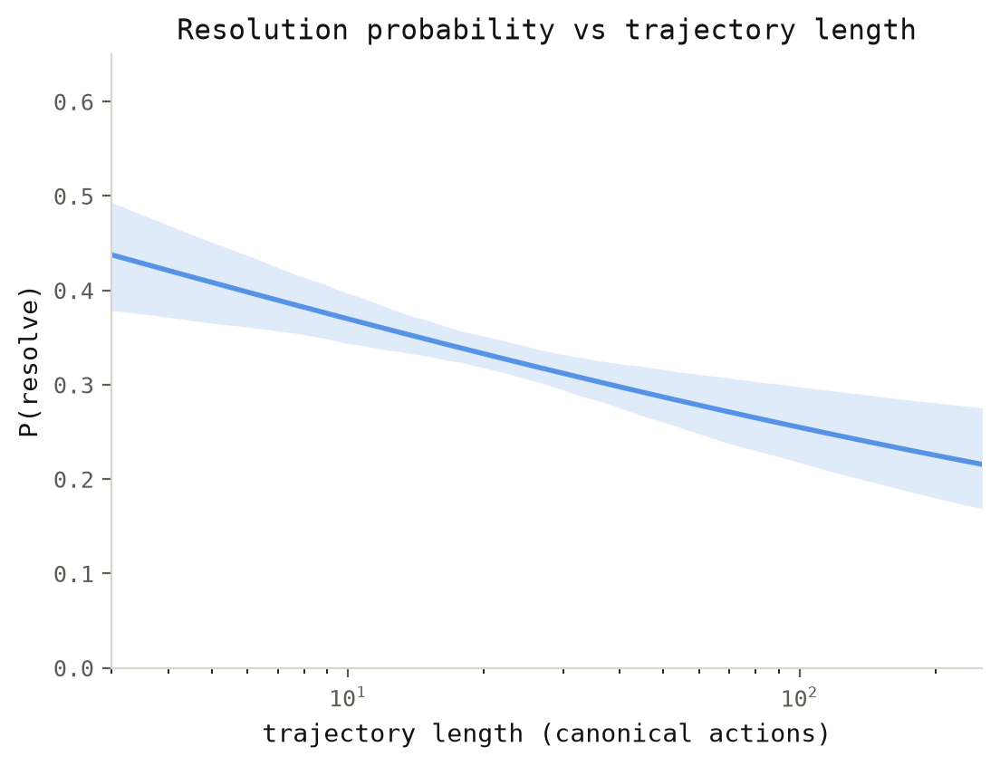

Background
As agent-style programming becomes more accessible, engineers will spend less time writing code directly and more time shaping how their agents frame and solve problems in the form of scaffolds—the wrappers around models that determine which tools they can employ, how they acquire context, and how they react to feedback. That said, traditional program analysis methods are too static to support this reliably and at scale (Jimenez et al. 2024; Yang et al. 2024; Chen et al. 2021; Austin et al. 2021)Jimenez, Carlos E., John Yang, Alexander Wettig, et al. 2024. SWE-Bench: Can Language Models Resolve Real-World GitHub Issues? https://arxiv.org/abs/2310.06770.Yang, John, Carlos E. Jimenez, Alexander Wettig, et al. 2024. SWE-Agent: Agent-Computer Interfaces Enable Automated Software Engineering. https://arxiv.org/abs/2405.15793.Chen, Mark, Jerry Tworek, Heewoo Jun, et al. 2021. Evaluating Large Language Models Trained on Code. https://arxiv.org/abs/2107.03374.Austin, Jacob, Augustus Odena, Maxwell Nye, et al. 2021. Program Synthesis with Large Language Models. https://arxiv.org/abs/2108.07732.. In this work, we introduce a suite of procedural programming tools and analyses on agent traces from software engineering evaluations to address this problem. We motivate this work by showing how variation in agent behavior affects outcomes. While traces can be interpreted in isolation, there is much to gain from studying them in aggregate—tapping into collective wisdom (Surowiecki 2004; Alizadeh et al. 2015)Surowiecki, James. 2004. The Wisdom of Crowds: Why the Many Are Smarter Than the Few and How Collective Wisdom Shapes Business, Economies, Societies, and Nations. Doubleday.Alizadeh, Hosein, Muhammad Yousefnezhad, and Behrouz Minaei Bidgoli. 2015. “Wisdom of Crowds Cluster Ensemble.” Intelligent Data Analysis 19 (3): 485–503. https://doi.org/10.3233/ida-150728.—yet there is a lack of tools for doing so, as meaningful comparison calls for shared representations.
While chain-of-thought has proven itself (eliciting rationale from the agent) useful for post-hoc rationalizing—it cannot be taken as grounded accounts of action (Wei et al. 2023; Ross et al. 2025; Guan et al. 2025)Wei, Jason, Xuezhi Wang, Dale Schuurmans, et al. 2023. Chain-of-Thought Prompting Elicits Reasoning in Large Language Models. https://arxiv.org/abs/2201.11903.Ross, Alexis, Megha Srivastava, Jeremiah Blanchard, and Jacob Andreas. 2025. Modeling Student Learning with 3.8 Million Program Traces. https://arxiv.org/abs/2510.05056.Guan, Melody Y., Miles Wang, Micah Carroll, et al. 2025. Monitoring Monitorability. https://arxiv.org/abs/2512.18311.. Given this, in this work we explore representations from traces to turn them into structured objects and motivate the need for doing so, and we employ our suite of analytical tools to study the different trajectories that agents take outside controlled settings (in an area of work we call behavioral fingerprinting). The goal is to expand the evaluation of agents beyond whether they simply pass or fail a task by venturing into the analysis of their procedural habits or “style” (Bisztray et al. 2025)Bisztray, Tamas, Bilel Cherif, Richard A. Dubniczky, et al. 2025. I Know Which LLM Wrote Your Code Last Summer: LLM Generated Code Stylometry for Authorship Attribution. https://arxiv.org/abs/2506.17323.. Additionally, we propose a number of interfaces and measurement frameworks to make these kinds of studies more accessible. This is our motivation for building ProcGrep which is a framework for setting up agent studies and studying their procedural variation.
Previous work has explored solution variation at scale for MOOCs (massively online open courses) to observe behavior with clustering (Glassman et al. 2015)Glassman, Elena L., Jeremy Scott, Rishabh Singh, Philip J. Guo, and Robert C. Miller. 2015. “OverCode: Visualizing Variation in Student Solutions to Programming Problems at Scale.” ACM Transactions on Computer-Human Interaction 22 (2): 7:1–35. https://doi.org/10.1145/2699751.. Platforms like LMArena compare agent outputs by evaluating preferred outputs in a pairwise fashion (Chiang et al. 2024)Chiang, Wei-Lin, Lianmin Zheng, Ying Sheng, et al. 2024. Chatbot Arena: An Open Platform for Evaluating LLMs by Human Preference. https://arxiv.org/abs/2403.04132.. Prior work has investigated using LLMs to generate plans from formal specifications (Silver et al. 2024)Silver, Tom, Soham Dan, Kavitha Srinivas, Josh Tenenbaum, Leslie Kaelbling, and Michael Katz. 2024. “Generalized Planning in PDDL Domains with Pretrained Large Language Models.” Proceedings of the AAAI Conference on Artificial Intelligence 38. https://doi.org/10.1609/aaai.v38i18.30006.; with procedural representations it is possible to do the inverse, where queries can be written as procedural specs to ‘grep’ traces. (Yin and Neubig 2017a)Yin, Pengcheng, and Graham Neubig. 2017a. A Syntactic Neural Model for General-Purpose Code Generation. https://arxiv.org/abs/1704.01696.. Observational studies of LLM chats have been performed at scale to understand trends in model use (Tamkin et al. 2024; Chatterji et al. 2025)Tamkin, Alex, Miles McCain, Kunal Handa, et al. 2024. Clio: Privacy-Preserving Insights into Real-World AI Use. https://arxiv.org/abs/2412.13678.Chatterji, Aaron, Thomas Cunningham, David J. Deming, et al. 2025. How People Use ChatGPT. NBER Working Paper No. 34255. National Bureau of Economic Research. https://www.nber.org/papers/w34255.. Frameworks have also been introduced for configuring models as agents to perform multi-step tasks with their own feedback loops given a goal specified upfront with ‘discovered’ end states (Yao et al. 2023)Yao, Shunyu, Jeffrey Zhao, Dian Yu, et al. 2023. ReAct: Synergizing Reasoning and Acting in Language Models. https://arxiv.org/abs/2210.03629.. And past work has also shown that coding style can be derived from source code using ASTs and decision trees in the form of random forest classifiers (Caliskan-Islam et al. 2015)Caliskan-Islam, Aylin, Richard Harang, Andrew Liu, et al. 2015. “De-Anonymizing Programmers via Code Stylometry.” Proceedings of the 24th USENIX Conference on Security Symposium (USA), SEC’15, 255–70..
Existing frameworks have been built for code alone in siloed environments where context is missing, looking at patches (Falleri et al. 2014; Yin and Neubig 2017b)Falleri, Jean-Rémy, Floréal Morandat, Xavier Blanc, Matias Martinez, and Martin Monperrus. 2014. “Fine-Grained and Accurate Source Code Differencing.” Proceedings of the 29th ACM/IEEE International Conference on Automated Software Engineering (New York, NY, USA), ASE ’14, 313–24. https://doi.org/10.1145/2642937.2642982.Yin, Pengcheng, and Graham Neubig. 2017b. “A Syntactic Neural Model for General-Purpose Code Generation.” In Proceedings of the 55th Annual Meeting of the Association for Computational Linguistics (Volume 1: Long Papers), edited by Regina Barzilay and Min-Yen Kan. Association for Computational Linguistics. https://doi.org/10.18653/v1/P17-1041. with ASTs (abstract syntax treesAST — the parsed tree structure of source code, capturing its syntactic and semantic form independent of formatting.— standard program analysis) which generalizes across languages. We make use of established parsing methods and extend them to work in multi-modal free-form environments where prompts, for example, are written in natural language (Cruz et al. 2026)Cruz, André F., Jon Kleinberg, and Rediet Abebe. 2026. Text as the Richest Preference Signal. demonstrating that a rich set of features can be observed and made sense of. Next, given one’s ability to audit procedures, there is an avenue for work which involves seeing what processes yield the best outputs. A new kind of model routing adapted to preferences could blossom by extending on our explorations (Hu et al. 2024)Hu, Qitian Jason, Jacob Bieker, Xiuyu Li, et al. 2024. RouterBench: A Benchmark for Multi-LLM Routing System. https://arxiv.org/abs/2403.12031..
A theory of procedural understanding
Firstly, we demonstrate that these fingerprints do in fact exist, and different models are differentiable by their architectural types. We find that models are distinguishable by their fingerprints alone at 85.7% accuracy compared to a random baseline of 11.1% when selecting a model by chance. We attribute this to problem solving style (Bisztray et al. 2025)Bisztray, Tamas, Bilel Cherif, Richard A. Dubniczky, et al. 2025. I Know Which LLM Wrote Your Code Last Summer: LLM Generated Code Stylometry for Authorship Attribution. https://arxiv.org/abs/2506.17323.. Furthermore, we extend this to deterministic scaffolds such as Agentless and Moatless to see if they affect procedural behavior and they also imprint unique fingerprints that are identifiable with near perfect accuracy. We performed the comparisons in pairwise settings, to understand distinguishability and we find that Claude-4 and SWE-agent-LM-32B are the most identifiable, whereas GPT-4 and Claude-3 Opus are the most confusable (F1 0.20–0.30).
Framing agent coding traces as procedures lets us comparatively study and interact with them in ways that are useful for benchmarking, evaluating the difficulty of evals themselves, differentiating models by their behavioral fingerprints“…identifiable by their behavioral habits, which we define as fingerprints: a probe over these procedural signatures attributes an unseen trajectory to the correct agent.”— this paper, Abstract, and performing procedural search. We release a library called ProcGrep to support these use cases. For example, ProcGrep supports queries such as the following.
“All Claude-4 trajectories from the past two weeks on Python repositories where search_repo was followed by three or more read_file calls within the first 8 steps, the agent then made at least one edit, and no run_test occurred before the final submit—on instances in the hardest difficulty band (over four hours to solve).”
In this work, we use traces for a number of popular software engineering benchmarks and test a number of SOTA model families (GPT, Claude, DeepSeek, and Qwen). We use public archives of model traces for SWE-Bench (princeton-nlp/SWE-bench-experiments) and do the same for Agentless logs. Table 1 lists the full set of agents studied: ten agents across four scaffoldsThe wrapper around a model that determines which tools it can use, how it acquires context, and how it reacts to feedback.— this paper, §Background (SWE-agent, Agentless, DARS, Moatless) with models from the GPT, Claude, DeepSeek, and Qwen families.
| Scaffold | Model | Paradigm | n |
|---|---|---|---|
| SWE-agent | Claude-3 Opus | RLHF dense | 300 |
| SWE-agent | Claude-3.5 | RLHF dense | 289 |
| SWE-agent | Claude-3.7 (thinking) | Extended thinking | 284 |
| SWE-agent | Claude-4 | Extended thinking | 288 |
| SWE-agent | GPT-4 | RLHF dense | 300 |
| SWE-agent | GPT-4o | RLHF dense | 278 |
| DARS | DeepSeek-R1 | RL reasoning | 300 |
| Agentless | Claude-3.5 | RLHF dense | 300 |
| Moatless | DeepSeek-V3 | MoE pretrain | 300 |
| SWE-agent | SWE-agent-LM-32B^\dagger | SFT-distilled (Qwen2.5-32B) | 499 |
We define what is the appropriate language to describe and program their behavior. What we call a “procedural fingerprint” is recovered from what an agent actually did (its trajectory) rather than its components or what it states. A fingerprint is a distinguishable feature of an agent from other agents and is consistent over time. Firstly, we demonstrate that these fingerprints do in fact exist, and different models are differentiable by their architectural types. We find that models are distinguishable by their fingerprints alone at 85.7% accuracy compared to a random baseline of 11.1% when selecting a model by chance. We attribute this to problem solving style (Bisztray et al. 2025)Bisztray, Tamas, Bilel Cherif, Richard A. Dubniczky, et al. 2025. I Know Which LLM Wrote Your Code Last Summer: LLM Generated Code Stylometry for Authorship Attribution. https://arxiv.org/abs/2506.17323.. Furthermore, we extend this to deterministic scaffolds such as Agentless and Moatless to see if they affect procedural behavior and they also imprint unique fingerprints that are identifiable with near perfect accuracy. We performed the comparisons in pairwise settings, to understand distinguishability and we find that Claude-4 and SWE-agent-LM-32B are the most identifiable, whereas GPT-4 and Claude-3 Opus are the most confusable (F1 0.20–0.30).
We show the discriminating action pairs for each agent and demonstrate how much signal for differentiability they offer–in other words, how discriminative they are. We find that deterministic agents have the most discriminating pairs. For example, DARS over-uses search_repo\tocreate_file by 31.6\times and Moatless edit\tosubmit by 15.7\times. Interestingly, looking at distilled models that are taught via the rollouts of their teacher (Claude-3.7 Sonnet), we see some semblance of learned behavior where procedural habits are passed down to student (SWE-agent-LM-32B) models.
| Agent | Signature transition | Discrim. factor (\times) | Share |
|---|---|---|---|
| DARS+R1 | search_repo\tocreate_file |
31.6 | 0.022 |
| Moatless+V3 | edit\tosubmit |
15.7 | 0.064 |
| Agentless+Claude-3.5 | run_test\torun_test |
12.5 | 0.111 |
| Claude-3.7-thinking | create_file\torun_test |
9.7 | 0.029 |
| SWE-agent-LM-32B | create_file\torun_test |
6.0 | 0.023 |
| Claude-4 | read_file\toread_file |
5.0 | 0.603 |
| Claude-3 | create_file\toedit |
4.7 | 0.117 |
| GPT-4 | create_file\toedit |
3.3 | 0.092 |
| GPT-4o | run_test\toedit |
3.3 | 0.141 |
| Claude-3.5 | run_test\toedit |
2.5 | 0.115 |
Inducing action vocabularies
Given a set of procedures that we might want to compare, which we can call a procedural space, we need a vocabulary or a set of actions that we can use to describe all of them. The contributions of this framework comes from being able to define this vocabulary bottom-up instead of with a more hard-coded or classifier based approach. We benchmark our methods against prompt-based classifiers, finding that across four judge models, prompt-based classifiers have near-zero agreement across model families and struggle to identify compositional trajectories. This affirms our motivations for having representations that can be shared across models and instances to allow for comparative analysis (Table 10).
This means that there are features of the full vocabulary or alphabet which we can study in itself and can form the basis of insights. To define our vocabulary, we need to be able to extract these procedures and label them to understand what they are. Each procedure should be composable and collapse into one another because steps are taken in sequence for specific tasks and to avoid redundancy—where each procedure of the trajectory should be meaningfully unique or composed of unique sub-procedures. We find that procedural diversity does not correspond with capabilities, where stronger and newer extended-thinking models do better with fewer procedures (Claude-3.7 = 32, Claude-4 = 35) compared to older Claude-3/3.5 models, which have repertoires of 42–44 procedures—which is relatively counter-intuitive.
An information theory of procedures
Because of this, we do not rely on a stopping point defined by behavior as in library learning, and instead determine it intrinsically. Metrics such as compression ratio, entropyShannon entropy H: the uncertainty, or spread, of a probability distribution, measured in bits.— this paper, §An information theory of procedures, and vocabulary size characterize a vocabulary but do not on their own mark where to stop. We therefore treat the induction of a vocabulary as a similar class of problem to a clustering one, and draw on how clustering algorithms are evaluated to form the basis of an emergent stopping criterion (Rosenberg and Hirschberg 2007)Rosenberg, Andrew, and Julia Hirschberg. 2007. “V-Measure: A Conditional Entropy-Based External Cluster Evaluation Measure.” In Proceedings of the 2007 Joint Conference on Empirical Methods in Natural Language Processing and Computational Natural Language Learning (EMNLP-CoNLL), edited by Jason Eisner. Association for Computational Linguistics. https://aclanthology.org/D07-1043/.: the V-measureThe harmonic mean of homogeneity and completeness — an entropy-based score for how well a clustering matches ground-truth labels.— Rosenberg & Hirschberg 2007. We consider a vocabulary stable when it maximizes two measures: completeness, meaning the sub-actions of each procedure are correctly aligned with an intent, and homogeneity, meaning a procedure contains only actions that belong to it. In our sweep, the V-measure rises, plateaus across vocabulary sizes K=128–256, and then degrades; we take our stopping point at the plateau’s peak, K=192 (V-measure 0.644).
BPE or Byte-Pair EncodingIteratively merge the most frequent adjacent pair into a new token, building a compact vocabulary bottom-up; here applied to action sequences rather than text.— Sennrich et al. 2016 is a useful analog for this process and we employ it to induce our vocabulary. While BPE chunks natural language tokens by merging those that frequently appear together to compress the data for pre-training LLMs, we chunk actions from generated code (Sennrich et al. 2016)Sennrich, Rico, Barry Haddow, and Alexandra Birch. 2016. Neural Machine Translation of Rare Words with Subword Units. https://arxiv.org/abs/1508.07909.. The idea of learning action vocabularies bottom-up is drawn from library learning and program synthesisAutomatically generating programs from a specification — input/output examples, types, or a natural-language description.— Austin et al. 2021 (Ellis et al. 2020)Ellis, Kevin, Catherine Wong, Maxwell Nye, et al. 2020. DreamCoder: Growing Generalizable, Interpretable Knowledge with Wake-Sleep Bayesian Program Learning. https://arxiv.org/abs/2006.08381., where recurring procedural subsequences are abstracted from longer programs. While they are typically tied to specific tasks to improve performance, we do so largely for the emergent representations they offer. Additionally, BPE is just one algorithm for accomplishing this chunking, we evaluate BPE and PrefixSpanA classic sequential-pattern miner that grows frequent subsequences by projecting the database on each pattern's prefix.— standard sequential-pattern mining along the metrics that we care about in this work, but acknowledge that certain methods might favor different goals and find that BPE offers better separability (Figure 12).
V = 2 \cdot \frac{h \cdot c}{h + c} where homogeneity h and completeness c are defined as h = 1 - \frac{H(\text{actions} \mid \text{procedure})}{H(\text{actions})} \qquad c = 1 - \frac{H(\text{procedure} \mid \text{actions})}{H(\text{procedure})} H(\text{actions} \mid \text{procedure}) measures the confidence of belonging of an action to a procedure, and H(\text{procedure} \mid \text{actions}) measures the reverse. A vocabulary is stable when V is maximized. To extract the actions themselves, we take code hunks—solution patches—from these evaluation datasets and then parse them with an AST that gives a node tree and a syntactical and semantic representation of the code. Given the structural representation of the solution patches, we then apply an embedding stage to encode the change in plain language and the underlying intent by contextualizing the structured patch with the surrounding code and a behavioral description from the model.
We investigate entropy, and use Jensen–Shannon DivergenceA symmetric, smoothed measure of how different two probability distributions are: 0 when identical, and 1 (base-2) when they share no support.— defined in this paper, §An information theory of procedures (JSDJensen–Shannon divergence — a symmetric distance between two probability distributions, 0 (identical) to 1 (disjoint, base-2).— defined in this paper, §An information theory of procedures) to study how models diverge from the norm. This is important for detecting out-of-distribution behavior which may be useful in observational settings. Entropy (H), a measure of uncertainty in a distribution (where a distribution here is the probability over all the possible actions in our vocabulary), is a property that can be applied to a single agent’s distribution of actions, where it is defined as: H(p_a) = -\sum_{v \in \mathcal{V}} p_a(v) \log_2 p_a(v) JSD allows us to build on entropy and measure how different two distributions are. We denote the agent distributions a and b, where p_a and p_b denote the action distributions of agents a and b.
\mathrm{JSD}(p_a, p_b) = H\!\left(\frac{p_a + p_b}{2}\right) - \frac{1}{2}H(p_a) - \frac{1}{2}H(p_b)
Across all models, passing behavior includes a higher ratio of browsing to other actions. Extended thinking Claude models spend the largest proportion of their time in the shell compared to older models with more even task breakdowns. Models in the GPT family have more consistent behavior, but newer ones spend more time editing. Agent harnesses have less task diversity, potentially due to their programmed behavior and have more distinct breakdowns, the Agentless agent spends a disproportionate amount of time browsing and the Moatless scaffold leads to a large proportion of testing. An interesting application of this is forecasting the costs of an agent, as it is not only a product of the cost per tool call, but a function of the action types needed to complete it and the procedural tendencies of the model being orchestrated.

^*Cost estimated. $/step = cost per inference call. Extended thinking models reduce cost per step by routing calls through the shell and orchestrating them before invoking the more expensive inference calls (Claude-4: $0.018/step vs. Claude-3: $0.200/step).

| Representation | n | F1 (k=1) | Source |
|---|---|---|---|
| Structural pattern overlap | 289 | 0.347 | Deterministic |
| Action sequence distance | 289 | 0.274 | Deterministic |
| Edit action overlap | 289 | 0.256 | Deterministic |
| Narrative description | 289 | 0.177 | Varies by model |
| Agent plan description | 289 | 0.155 | Varies by model |
| Divergence classifier (LLM) | 87–286 | 0.000–0.363 | \kappa < 0.05 (cross-family) |
| Random retrieval | 289 | 0.13–0.24 | Baseline |
Why procedural representations matter
Given theoretical grounding, we put foundations to work in a number of ways. In this section we look at top-down analyses given agent traces. Firstly, we show that these approaches offer a more grounded representation of process than what can be elicited from models in natural language alone. We ask two questions: given what a model says it will do, what does it actually do (forward follow-through)? Then, given what a model says it did, what did it actually do (reverse follow-through)? Lastly, we show how procedural representations allow for structural search over traces.
We find that both model families have high reverse follow-through rates, where every action they take is mentioned somewhere in their reasoning. For GPT-4 and GPT-4o the reverse follow-through rate is 1.0, and for DARS+R1 and the Claude family (Claude-3 / 3.5 / 3.7 / 4) it is high but not complete (0.875 / 0.857 / 0.833 / 0.800 / 0.750, respectively).
We also assess precision in the behavioral descriptions themselves as a proxy for ‘groundedness’ from a representation. We find that models are generally verbose in their accounts, which might be a signal of performative chain-of-thought (Boppana et al. 2026)Boppana, Siddharth, Annabel Ma, Max Loeffler, et al. 2026. Reasoning Theater: Disentangling Model Beliefs from Chain-of-Thought. https://arxiv.org/abs/2603.05488.. For example, the GPT family are trained with heavy RLHF and instruction-tuning. Whereas the Claude family of models are presumably trained to follow more sprawling reasoning patterns before coalescing them into some preferred approach. Extended thinking models are the most verbose and have similar behavior to our baseline of shuffled rationales.
| Model | n | Verbosity | Precision | Baseline | Recall |
|---|---|---|---|---|---|
| Claude-3 | 300 | 1.07 | 0.833 | 0.678 | 0.857 |
| Claude-3.5 | 289 | 1.00 | 0.857 | 0.732 | 0.833 |
| Claude-3.7-thinking | 284 | 1.35 | 0.625 | 0.623 | 0.800 |
| Claude-4 | 288 | 1.32 | 0.500 | 0.536 | 0.750 |
| GPT-4 | 300 | 1.17 | 0.800 | 0.713 | 1.000 |
| GPT-4o | 278 | 1.18 | 0.750 | 0.679 | 1.000 |
| DARS+R1 | 300 | 1.07 | 0.857 | 0.775 | 0.875 |
Currently, it is difficult for a developer to search through their agents’ history without employing an LLM. The agent first has to surface the code it wrote, with context that it may or may not have written to memory. With ProcGrep, search can be deterministic in the same way that writing a SQL query is. We compare search with ProcGrep against LLM judges over the same queries, taking the deterministic structural match as ground truth. We find that ProcGrep is exact on queries spanning a range of agent actions: context retrieval and the number of files read; conditional events, where an action is retrieved based on a preceding event; and missing actions, where an event is retrieved by the absence of an action.
| Method | Mean F_1 | Latency/decision |
|---|---|---|
| ProcGrep (structural query) | 1.000 | 1.1 μs |
| Claude Sonnet 4.6 | 0.278 | 1.71 s |
| GPT-4o | 0.230 | 0.66 s |
| GPT-4o-mini | 0.221 | 0.69 s |
| Claude Opus 4.8 | 0.152 | 1.73 s |
| Claude 3.5 Haiku | 0.098 | 1.03 s |
| DeepSeek-chat | 0.093 | 1.51 s |
Natural studies with procedural representations
With this data, we can also validate other kinds of inferences regarding the shapes of problems and model behavior. For example, past work has found that models struggle with compositional generalization—this means that they are brittle in contexts where they need to do incremental work. We validate this in the wild and find that problems that require compositional generalization, defined by problems that have nested procedures, are especially difficult for agents, as evidenced by their failure rates. We define compositional problems as ones where the subproblems are ones that have been solved by the agent before, but when put together the agent failed. Looking at Figure 6 we can observe that compositionality is a relatively strong signal of failure, followed by novel actions, and familiar procedures yield the lowest failure rates. However, the pattern holds the most strongly for RLHF-trained models and much more modest for more classically trained models. Across models, similar trends hold, but open-weight agents have lower failure rates to compositional problems—when computing the difference of open-weight model failure at all points compared to other model families is {\sim}9\%.


Next, developers make a number of decisions to train and scaffold their models. We set out to understand how this affects model processes based on a set of tasks and find that “fingerprints” are recoverable—unique model-specific patterns regarding tool-use and order of operations that can be attributed back to an agent. Given certain parameters like the costs for different types of actions and the length of a task, hopefully this can form the basis of more informed model choice and configuration decisions depending on a developer’s goal (i.e. task and workflow-aware routing). For a given model, its procedural space can be described by its entropy and compression, where entropy describes the variance of the actions and compression is a rough proxy for repetitiveness. We find the GPT-4o has the most diversity of actions compared to Claude models.
Entropy is just one method of characterizing procedural behavior given a trajectory and it makes sense that there is some level of behavioral similarity for models of the same family and harness—suggesting that architectural design choices bleed into procedural tendencies. We compare the divergence of procedural distributions with JSD to test and find that scaffolds and model generation are the strongest indicators of procedural habits compared to the model generation in distilled model pairs, suggesting that the generation of the model and programmed behavior play a disproportionate role and that a distilled student’s procedural style is largely derived from its teacher. See Figure 13 for a matrix showing all the pairwise divergence rates across models.
| Factor | Comparison | JSD | \times floor |
|---|---|---|---|
| Lineage | teacher \to distilled child | 0.250 | 3.0 |
| Family | within family, across generations | 0.518 | 6.3 |
| Scaffold | same model, two harnesses | 0.533 | 6.5 |

How agents acquire context
We also look at the breadth of files that agents access. We believe this is a measure of efficiency and localization ability. In other words, the file coverage is a proxy for the range of the codebase that the agent interacts with. Claude-3.5 has the largest range, with a mean of 2.41 files per task, compared to an average of 1.66-1.90. However, the pass rate of the model is not proportional to the number of files that it accesses, where for every model there is usually a tipping point where accessing files becomes a signal of struggle rather than success. We observe this more broadly across agents where the highest pass rate instances are correlated with fewer files being edited, while there is a drop in pass rate (steeper for older models and milder for newer ones) when file edits increase—likely suggesting that success on a problem is tied to how easy it is to pinpoint.

We can also use our framework to understand trajectory anomalies as it pertains to context retrieval to offer developers useful signal for when their agents are failing. For instance, out of all 63 times that Agentless “wins”—where it successfully passes a task that SWE-agent does not—SWE-agent’s failures are marked by long edit streaks: it is over twice as likely to make five or more edits in a row when it fails as when it succeeds. Agentless is an overall more efficient agent, as it will require an average of 13 steps, where it will localize the error, patch the problem, and validate in a clean loop, compared to SWE-agent’s average of 33.
| Outcome | n | Difficulty | SWE-agent steps | Agentless steps |
|---|---|---|---|---|
| Both pass | 54 | 7.17 | 20.4 | 13.0 |
| SWE-agent only | 15 | 4.53 | 30.7 | 13.0 |
| Agentless only | 63 | 4.59 | 33.3 | 13.0 |
| Neither passes | 157 | 0.69 | 36.8 | 13.0 |
| Total | 289 | |||
Controlled evaluations with procedural controls
In agent programming and benchmarking, an engineer can specify parameters such as the number of tool use turns and response lengths in the form of tokens, but there is little control over how a task is done. Controlling for behavior at the level of actions is an under-explored way of assessing capabilities—while ablations are possible at different levels of abstraction, it is not possible to say a model can only retrieve context via grep or when, or run a certain number of tests and after what actions.
Fingerprints give us behavioral trends that form the basis for predicting which actions a given agent is most likely to take, useful for next-action prediction and anomaly detection. We batch trajectories into five groups, training models on four and leaving one as a held-out test set using GroupKFoldK-fold cross-validation in which all samples from one group — here, one task instance — stay in the same fold, so no instance is ever split across train and test.— scikit-learn and see that fingerprinting accuracy is relatively unchanged when grouping by task (\Delta = -0.007), demonstrating that identifiability is largely a function of style and not task memorization from the probe itself (for example, pattern matching certain actions to specific tasks).
As shown in Table 6, agents fall into three regimes: deterministic scaffolds like Agentless, which are nearly fully predictable (82% accuracy, +51 points over baseline); constrained scaffolds like Moatless, where the scaffold drives behavior and the baseline is already high (73% accuracy, +8 points); and open-ended model-driven agents like Claude and GPT, where predictions are stronger at the single-action level (e.g., Claude-3.5 at 50% accuracy, +33 points). We also find that edit streaks are a strong failure signal: for Moatless+DeepSeek-V3, 43% of trajectories have edit streaks of 5 or more, and of those, the fail rate is 80%, compared to 59% for no-streak trajectories. For Claude-3.5 the signal is weaker, with pass rate dropping from 26% to 11% with a streak \geq5, though the magnitude is comparable. Overall, we believe this makes a strong case for procedural representations as a basis for next-action and final state prediction.
| Next action | Next stage | |||||
|---|---|---|---|---|---|---|
| 2-4(lr)5-7 Agent | Base | Acc. | \Delta | Base | Acc. | \Delta |
| Claude-3 | 13% | 46% | +33 | 33% | 47% | +14 |
| Claude-3.5 | 18% | 50% | +33 | 35% | 51% | +16 |
| Claude-3.7-thinking | 23% | 54% | +31 | 44% | 65% | +21 |
| Claude-4 | 51% | 61% | +10 | 51% | 67% | +16 |
| GPT-4 | 20% | 57% | +37 | 50% | 56% | +6 |
| GPT-4o | 27% | 60% | +34 | 50% | 62% | +12 |
| DARS+DeepSeek-R1 | 30% | 46% | +17 | 37% | 49% | +12 |
| Agentless+Claude-3.5 | 31% | 82% | +51 | 31% | 82% | +51 |
| Moatless+DeepSeek-V3 | 65% | 73% | +8 | 65% | 73% | +8 |
Programming procedural rewards
One application of ProcGrep is the ability to specify and reward model behavior on long-horizon tasks. Typically, reward systems for coding models have focused on binary outcomes, but trajectory specifications enable partial rewards based on procedural milestones, providing a denser signal that captures intermediate progress and can be more readily adapted to changing goals. With ProcGrep, rewards can be assigned to action sequences in uniquely fine-grained ways. Here, we design a specification to reward what we define as problem-solving best practices such as exploration, implementation, and test verification and to penalize long edit streaks that would burn resources and a lack of search which suggests unsystematic problem-solving.
phases:
- name: exploration reward: 0.10
require_any: [{atom: search_repo}, {atom: read_file}]
min_occurrences: 2 before_first: edit
- name: implementation reward: 0.15
require_any: [{atom: edit}]
- name: test_verification reward: 0.25
require_sequence: [edit, run_test] max_gap: 5
- name: completion reward: 0.10
require_any: [{atom: submit}]
penalties:
- name: edit_streak penalty: 0.15
pattern: [edit, edit, edit, edit, edit] contiguous: true
- name: no_search penalty: 0.05
require_absent_before: [search_repo, read_file] before_first: edit
bonuses:
- name: test_driven reward: 0.10
require_sequence: [run_test] before_first: editWe show a snippet of the spec in YAML above and provide the point scheme below and a table of results where we show that Agentless+Claude-3.5 is the winning scaffold for following said instructions. Here, we hand-author an action sequence and the feedback derived from it, but do not close the loop with a trained model. Thus, we use the following as an illustrative example and recognize that crafting a state will depend on a variety of goals and decisions:
{"instance_id": "django__django-12345",
"binary_pass": false, "proc_score": 0.35,
"satisfied_phases": ["exploration",
"implementation", "test_verification"],
"triggered_penalties": ["edit_streak"],
"triggered_bonuses": []}| Type | Component | Triggered when | Points |
|---|---|---|---|
| Phase | exploration | \geq 2 search/read before first edit | +0.10 |
| implementation | any edit | +0.15 | |
| test_verification | edit \to run_test within 5 steps | +0.25 | |
| completion | any submit | +0.10 | |
| Bonus | test_driven | run_test before first edit | +0.10 |
| Penalty | edit_streak | 5 contiguous edits | -0.15 |
| no_search | first edit with no prior search/read | -0.05 |
| Proc. | Explore | Test | Test- | Edit | No | ||
| Agent | n | score | verif. | driven | streak | search | |
| Agentless+Claude-3.5 | 300 | 0.600 | 100% | 100% | 0% | 0% | 0% |
| DARS+R1 | 300 | 0.468 | 33% | 86% | 0% | 8% | 34% |
| Claude-3.5 | 289 | 0.447 | 36% | 90% | 1% | 16% | 54% |
| Claude-3.7-thinking | 284 | 0.397 | 97% | 18% | 17% | 2% | 0% |
| Claude-3 | 300 | 0.384 | 19% | 88% | 9% | 12% | 73% |
| GPT-4o | 278 | 0.383 | 23% | 97% | 2% | 32% | 70% |
| GPT-4 | 300 | 0.381 | 21% | 85% | 0% | 21% | 75% |
| Claude-4 | 288 | 0.345 | 100% | 0% | 1% | 3% | 0% |
| Moatless+V3 | 300 | 0.187 | 49% | 0% | 0% | 41% | 0% |
In the following, we do a run to compare two procedural types (test-driven and patch-driven) across agent rollouts. For the test-driven specification, we reward interleaving edits with tests; for the patch-driven one, we reward the model going directly from edits to submission and penalize tests in this regime. With this, we can interpret the \Delta as how consistent each regime is with the model’s innate procedural tendencies (Table 9).
| Agent | Test-driven | Patch-driven | \Delta |
|---|---|---|---|
| GPT-4o | 0.562 | 0.399 | +0.163 |
| Claude-3 | 0.541 | 0.399 | +0.143 |
| GPT-4 | 0.515 | 0.452 | +0.063 |
| Claude-3.5 | 0.565 | 0.513 | +0.052 |
| Agentless+Claude-3.5 | 0.700 | 0.700 | 0.000 |
| DARS+R1 | 0.550 | 0.557 | -0.007 |
| Moatless+V3 | 0.095 | 0.456 | -0.361 |
| Claude-3.7-thinking | 0.285 | 0.677 | -0.391 |
| Claude-4 | 0.200 | 0.692 | -0.492 |
With these examples, we hope to inspire what is possible to study, though we believe there are a number of configurations one could program depending on the use case. The scores we assign to the rewards are relatively arbitrary—our main contribution is building the means to specify them in the first place—and a meaningful area of future work is dynamic scoring that adapts to observed final states in continual-learning contexts.
Do students behave like their teachers? (a distilled model case study)
We consider a distilled model pair consisting of a teacher and a student model, where the student model is trained on trajectories generated by the teacher through supervised fine-tuning. While distillation is typically employed because it can produce performant models at a fraction of the cost, do students actually learn to problem solve like their parents and what value does this confer if they do (Hinton et al. 2015; Zhang et al. 2026)Hinton, Geoffrey, Oriol Vinyals, and Jeff Dean. 2015. Distilling the Knowledge in a Neural Network. https://arxiv.org/abs/1503.02531.Zhang, Ruixiang, Richard He Bai, Huangjie Zheng, Navdeep Jaitly, Ronan Collobert, and Yizhe Zhang. 2026. Embarrassingly Simple Self-Distillation Improves Code Generation. https://arxiv.org/abs/2604.01193.? We find that the student inherits the teacher’s full action vocabulary and shows concentrated entropy, which means that when the distilled model succeeds it has lower entropy and is more procedurally similar than when it fails, showing that procedural mimicry could be a means to improve success rates for distilled models. We analyze 284 parent and 498 child trajectories using lineage_diff across three axes: vocabulary preservation, entropy shifts, and outcome divergence. Stratifying by outcome at the native level, passing child trajectories share 0.204 of the parent’s tool signatures, whereas failing trajectories share only 0.193 (\Delta = 0.01).
Conclusion
In this work we set out to define and motivate a new lens for studying agent trajectories, specifically in coding settings. They are natural exhaust from models that are being deployed for increasingly long-horizon tasks, and we believe there is a need for tools to make use of them to help a new age of developers who are tasked with deciding which models to employ and how to architect their agents. We validate procedural fingerprinting, demonstrating that problem-solving style is a real property of agent behavior and something that can be programmed. We find that agents are recoverable from their traces alone at a near 90% rate as compared to random baseline of 11%. We show that different models that would otherwise be studied in isolation can be compared through new methods for representing their traces and breaking them into meaningful sub-processes. We also show that certain procedural quirks are linked to success and failure, which can be the basis of inferring outcomes even when a full trajectory has not been carried out in its entirety, suggesting that telemetry can be a way to reduce overall compute spend.
We are excited about new ways of applying ProcGrep–the library that was built to do the top-down analysis we put forth in this work—particularly, when training models to carry out long-horizon tasks with resource management in mind. In the future, we anticipate the methods put forth in this work can complement model diffing methods built to probe into models at a functional and behavioral level to produce more holistic analyses of agents (Jiralerspong and Bricken 2026; Aranguri and McGrath 2025)Jiralerspong, Thomas, and Trenton Bricken. 2026. Cross-Architecture Model Diffing with Crosscoders: Unsupervised Discovery of Differences Between LLMs. https://arxiv.org/abs/2602.11729.Aranguri, Santiago, and Tom McGrath. 2025. “Discovering Undesired Rare Behaviors via Model Diff Amplification.” Goodfire..
Appendix
Algorithms for vocabulary discovery
Byte-Pair Encoding
Input: action sequences S = {s1, ..., sn}; target vocabulary size K
Output: vocabulary V; tokenized sequences T
V ← { all atoms appearing in S }
T ← S
while |V| < K:
count frequency of every adjacent token pair (a, b) in T
(a*, b*) ← argmax over (a, b) of freq(a, b)
if freq(a*, b*) below threshold:
break
t ← a* · b*
V ← V ∪ { t }
replace every adjacent occurrence of (a*, b*) in T with t
return V, TPrefixSpan
Input: sequences S; minimum support σ
Output: frequent sequential patterns P
P ← ∅
for each item b that is frequent in the σ-projected database S|α:
α' ← α · b
P ← P ∪ { α' }
S|α' ← { suffix of r after its first occurrence of b : r ∈ S|α }
recurse on S|α' to extend α'
return P| Judge | % Compositional | F1 (k=1) Pass/Fail | Mean \kappa |
|---|---|---|---|
| GPT-4o | 38.1% | 0.363 | 0.136 |
| GPT-4o-mini | 36.5% | 0.246 | 0.156 |
| Qwen-2.5-72B | 17.2% | 0.167 | 0.128 |
| Llama-3.3-70B | 21.8% | 0.000 | 0.123 |
Classifier prompt
You are evaluating a software engineer’s response to a bug report. You are given the reference patch—the actual fix—and use it as ground truth.
Bug report: |
{problem_statement} |
Reference patch: |
{gold_patch} |
Response: |
{response} |
Reason briefly about each dimension, then score it 0–3 (0= wrong, 3= exact match to the reference):
localization — same file/function as the patch?
edit_type — right kind of change?
plan_quality — would this plan reproduce the patch?
explanation — grounded in what the patch does?
Identify the first plan step where the response diverges (-1 if fully aligned) and its level:
surface — wrong file/function name (token-level)
compositional — right location, wrong operation or order (syntactic-level)
relational — right operations, wrong dependency or interaction (graph-level)
none — no divergence
Output per-dimension reasoning, then:
{"localization": int, "edit_type": int, "plan_quality": int,
"explanation": int, "first_deviation_step": int,
"divergence_level": "surface|compositional|relational|none"}
| Judge model | n | F1 (k=1) | % compositional | Mean \kappa |
|---|---|---|---|---|
| GPT-4o | 286 | 0.363 | 38.1% | 0.136 |
| GPT-4o mini | 285 | 0.246 | 36.5% | 0.156 |
| Qwen 2.5 72B | 87 | 0.167 | 17.2% | 0.128 |
| Llama 3.3 70B | 87 | 0.000 | 21.8% | 0.123 |
| Weighted mean | 745 | 0.253 | – | – |
Procedural reward specifications
The test-driven and patch-driven specifications scored in Table 9. Both have a maximum attainable score of 0.70 before penalties.
phases:
- name: exploration reward: 0.10
require_any: [{atom: search_repo}, {atom: read_file}]
min_occurrences: 2 before_first: edit
- name: test_first reward: 0.20
require_sequence: [run_test] before_first: edit
- name: implementation reward: 0.10
require_any: [{atom: edit}]
- name: verification reward: 0.30
require_sequence: [edit, run_test] max_gap: 5
penalties:
- name: edit_streak penalty: 0.15
pattern: [edit, edit, edit, edit, edit] contiguous: truephases:
- name: localization reward: 0.20
require_any: [{atom: search_repo}, {atom: read_file}]
min_occurrences: 2 before_first: edit
- name: implementation reward: 0.30
require_any: [{atom: edit}]
- name: completion reward: 0.20
require_any: [{atom: submit}]
penalties:
- name: test_thrash penalty: 0.15
pattern: [run_test, run_test, run_test] contiguous: true
- name: edit_streak penalty: 0.10
pattern: [edit, edit, edit, edit, edit] contiguous: true
